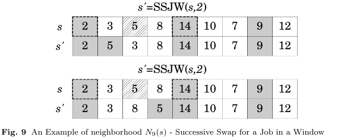

The neighborhood purpose is to find a first swap of position between two jobs that improve the objective function.
For this, the method receives a sequence S, a position i ∈ S which represents the job j. Subsequently a window W is set between the position idxStart of the last predecessor job of j and position idxEnd the first successor job of j allocated in S. The size of W was limited to l which is defined by (idxEnd − idxStart − 1)/2. Then, job j on position i is sequentially changed with every job in W, until a first improvement in the objective function occurs.
Figure 9 shows the movement made by this neighborhood. In this example, the method receives as parameter the index 2 of jobs and try to swap this job with the first one on W, if there is no improvement in the objective function it attempted to swap with the next job on W. In this case, the improvement occurred in the second swap. The jobs of project are colored in of gray and the last predecessor and first successor are emphasized.
